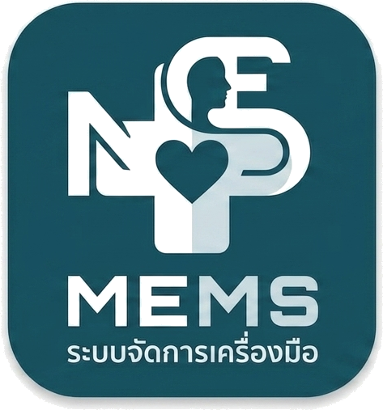

<!doctype html><html lang="th"><meta charset="utf-8"><meta name="viewport" content="width=device-width,initial-scale=1"><title>MEMS · ตัวอย่างหน้าคีย์สอบเทียบ</title>
<style>
*{box-sizing:border-box}body{margin:0;background:#edf3f4;color:#173b45;font:14px 'Sarabun','Segoe UI',Tahoma,sans-serif}button,input,select{font:inherit}header{height:58px;background:#075c65;color:white;display:flex;align-items:center;padding:0 28px;gap:12px}header img{width:38px;height:38px;object-fit:contain}header strong{font-size:21px}header small{margin-left:auto;color:#cfebea}main{max-width:1360px;margin:auto;padding:16px 24px}.toolbar{display:flex;align-items:center;gap:12px;margin-bottom:12px}.toolbar h1{font-size:23px;margin:0}.toolbar span{color:#607d85}.toolbar button:first-of-type{margin-left:auto}button{background:white;color:#075c65;border:1px solid #b7cdd1;border-radius:6px;padding:8px 13px;cursor:pointer}button:focus-visible,input:focus-visible,select:focus-visible{outline:3px solid #26aaa9;outline-offset:1px}.primary{background:#087c86;color:white;border-color:#087c86}.workspace{border:1px solid #bdcfd3;border-radius:10px;background:white;overflow:hidden}.top{display:grid;grid-template-columns:1fr 1.1fr 1fr}.panel{padding:12px 16px;border-right:1px solid #d6e3e6}.panel:last-child{border:0}h2{font-size:13px;letter-spacing:.02em;color:#087c86;margin:0 0 9px}label{display:grid;grid-template-columns:100px minmax(0,1fr);gap:8px;align-items:center;margin:6px 0;color:#56717b;font-size:12px}input,select{width:100%;min-width:0;border:1px solid #c5d7db;border-radius:4px;background:#fff;color:#173b45;padding:5px 8px;height:32px}input[readonly]{background:#f3f7f8}.cert{font-weight:bold;color:#075c65;background:#e7f4f3!important}.pair{display:grid;grid-template-columns:1fr 1fr;gap:12px}.pair label{grid-template-columns:1fr;gap:2px}.tablebar{padding:10px 16px;display:flex;align-items:center;gap:14px;background:#e8f3f4;border-block:1px solid #cbdde0}.tablebar strong{font-size:14px}.tablebar small{color:#607b83;margin-left:auto}.tablebar select{width:90px}.tablewrap{overflow:auto;min-height:242px}table{border-collapse:collapse;width:100%;font-variant-numeric:tabular-nums}th{font-size:12px;color:#466871;background:#f5f9fa;height:36px}td,th{border-bottom:1px solid #e0eaed;border-right:1px solid #e0eaed;text-align:center;padding:5px 10px}td input{text-align:center;height:34px}td:first-child{width:48px;color:#729099}td.result{background:#f6fafb;color:#075c65}td button{border:0;padding:3px 9px;color:#9b5361}.addrow{padding:6px 16px}.addrow button{border:0;padding:5px 0;font-size:12px}.standard{border-top:1px solid #ccdde0;padding:10px 16px;display:grid;grid-template-columns:140px repeat(5,1fr);gap:12px;align-items:center;background:#f7faf9}.standard label{display:block;margin:0}.standard input{margin-top:3px}.bottom{padding:10px 16px;border-top:1px solid #d7e4e7;display:grid;grid-template-columns:1.1fr 1fr;gap:22px}.budget{display:flex;align-items:center;gap:8px}.budget label{display:block;margin:0;flex:1}.budget input{margin-top:3px}.budget strong{font-size:12px;min-width:45px}.bottom>label{grid-template-columns:55px 1fr;margin:0}footer{display:flex;align-items:center;gap:10px;padding-top:12px}footer small{color:#71868c}footer button:first-of-type{margin-left:auto}.note{font-size:11px;color:#789096;margin:9px 0 0}.toast{color:#087c86;font-weight:bold}@media(max-width:850px){.top{grid-template-columns:1fr}.panel{border-right:0;border-bottom:1px solid #ddd}.standard{grid-template-columns:repeat(3,1fr)}.bottom{grid-template-columns:1fr}main{padding:12px}table{min-width:750px}.toolbar span{display:none}}
</style>
<header><strong>MEMs</strong><span> / Calibration</span><small>ตัวอย่างการออกแบบ · ข้อมูลสมมติ</small></header>
<main><div class="toolbar"><button onclick="history.back()">← คิวสอบเทียบ</button><h1>Flowmeter</h1><span>บันทึกผลสอบเทียบ</span><button onclick="document.querySelectorAll('tbody input').forEach(x=>x.value='')">ล้างค่าที่วัด</button></div>
<div class="workspace"><div class="top"><section class="panel"><h2>01 · เครื่องมือ / Equipment</h2><label>Cal No.<input class="cert" value="CA-5-69-10731-02774" readonly></label><label>ชื่อเครื่องมือ<input value="FLOWMETER" readonly></label><div class="pair"><label>ยี่ห้อ<input value="OHIO" readonly></label><label>รุ่น<input value="—" readonly></label></div><label>ID เครื่องมือ<input value="316544" readonly></label><label>เลขครุภัณฑ์<input value="1111-111-1111-11/11" readonly></label><label>S/N<input value="—" readonly></label></section>
<section class="panel"><h2>02 · หน่วยงาน / สภาพแวดล้อม</h2><label>โรงพยาบาล<input value="โรงพยาบาลพหลพลพยุหเสนา" readonly></label><label>หน่วยงาน<input value="กจ.2" readonly></label><label>สถานที่สอบเทียบ<input value="ศูนย์เครื่องมือแพทย์"></label><div class="pair"><label>อุณหภูมิ (°C)<input type="number" value="23"></label><label>ความชื้น (% RH)<input type="number" value="50"></label></div><label>วันที่สอบเทียบ<input type="date" value="2026-11-12"></label></section>
<section class="panel"><h2>03 · ผู้ปฏิบัติงาน / ผู้ลงนาม</h2><label>ผู้บันทึก<select><option>ฟลุ๊ค</option><option>เลือกผู้บันทึก</option></select></label><label>ผู้ทดสอบ<select><option>เลือกผู้ทดสอบ</option><option>ช่างสอบเทียบ 1</option></select></label><label>ผู้อนุมัติ<select><option>เลือกผู้อนุมัติ</option><option>ผู้อนุมัติ 1</option></select></label><label>วันที่อนุมัติ<input type="date"></label><p class="note">ชื่อและลายเซ็นที่เลือกจะแสดงบนใบรับรอง</p></section></div>
<div class="tablebar"><strong>ค่าที่วัด · อัตราการไหล</strong><small>Tab / Enter เลื่อนช่อง · วัด 3 รอบ</small><span>หน่วย</span><select><option>L/min</option><option>mL/h</option></select></div>
<div class="tablewrap"><table><thead><tr><th>จุด</th><th>UUT / ค่าตั้ง</th><th>STD-1</th><th>STD-2</th><th>STD-3</th><th>Mean</th><th>Error</th><th>UCA</th><th></th></tr></thead><tbody></tbody></table><div class="addrow"><button id="add">＋ เพิ่มจุดทดสอบ</button></div></div>
<div class="standard"><h2>Standard Used<br><small>เครื่องมาตรฐาน</small></h2><label>ยี่ห้อ<input value="Defender"></label><label>รุ่น<input value="510-H"></label><label>S/N<input value="155674"></label><label>วันที่สอบเทียบ<input type="date" value="2025-09-14"></label><label>Cert. No.<input value="25MD1639"></label></div>
<div class="bottom"><div class="budget"><strong>UCB</strong><label>UCB1<input placeholder="0" type="number"></label><label>UCB2<input placeholder="0" type="number"></label><label>UCB3<input placeholder="0" type="number"></label><label>UCB4<input placeholder="0" type="number"></label></div><label>หมายเหตุ<input placeholder="ระบุเพิ่มเติม (ถ้ามี)"></label></div></div>
<footer><small id="message">ตัวอย่างหน้าคีย์แบบกระชับ · ยังไม่เชื่อมฐานข้อมูล</small><button onclick="document.querySelector('#message').textContent='ตัวอย่าง: เปิดใบรับรอง PDF หลังบันทึก'">ดูใบรับรอง PDF</button><button class="primary" onclick="document.querySelector('#message').textContent='แสดงตัวอย่างการบันทึกแล้ว — ไม่มีการส่งข้อมูลจริง'">บันทึกผลสอบเทียบ</button></footer></main>
<script>const body=document.querySelector('tbody');function add(value=''){const r=document.createElement('tr');r.innerHTML='<td></td>'+[value,'','',''].map(v=>'<td><input type="number" step="any" value="'+v+'"></td>').join('')+'<td class="result">—</td><td class="result">—</td><td class="result">—</td><td><button aria-label="ลบจุดทดสอบ">×</button></td>';r.querySelector('button').onclick=()=>{r.remove();number()};body.append(r);number()}function number(){[...body.rows].forEach((r,i)=>{r.cells[0].textContent=i+1;r.querySelectorAll('input').forEach((e,j)=>e.setAttribute('aria-label',['ค่าตั้ง','STD-1','STD-2','STD-3'][j]+' จุด '+(i+1)))})}[2,4,6,10].forEach(add);document.querySelector('#add').onclick=()=>add();body.onkeydown=e=>{if(e.key==='Enter'){e.preventDefault();const a=[...body.querySelectorAll('input')];a[a.indexOf(e.target)+1]?.focus()}};</script></html>

